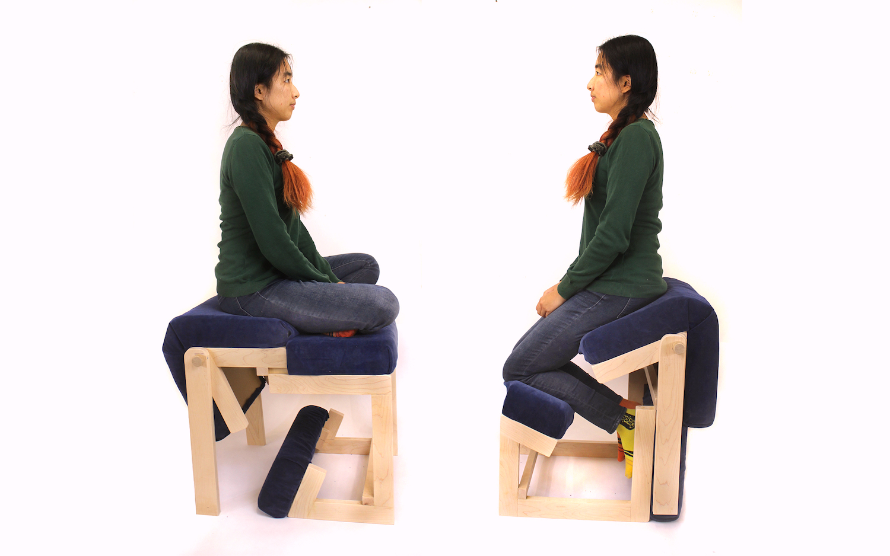

Flip Chair
Flip Chair allows people to flip the chair and switch between kneeling and cross-legged postures. Compared to a common chair-style sitting, kneeling and cross-legged encourage a neutral spine alignment and use more muscle activities.

©Jennifer Ziyuan Huang